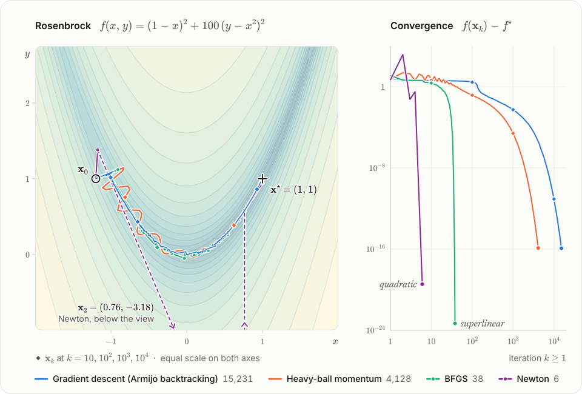

Every lab replays the Python reference, step by step
Numerical optimization, iterate by iterate.
Pick a problem, race up to four methods across its landscape, and read every iterate beside the update rule that produced it — with the citation it came from.
Open the descent lab →Browse 168 methods
$ pip install git+https://github.com/saeedahmadicp/numerical_optimization_of_ai
>>> import numopt
>>> from numopt import problems
>>> res = numopt.run("bfgs", problems.get("rosenbrock"), x0=[-1.2, 1.0])
>>> res.converged, res.n_iter
(True, 38)

Four methods from \mathbf{x}_0 = (-1.2, 1), one test: \|\nabla f(\mathbf{x}_k)\|_2 \le 10^{-8}Replay ▸ · Open in the lab →
168methods in the Python reference
16families, from roots to regression
103test problems with exact derivatives
10^{-8}largest |\Delta \mathbf{x}_k| on the first ten iterates, Python ↔ TypeScript
Labs
Every family, grouped as a numerical-analysis syllabus would be · open labs markedThe MethodCard
One card per method, synced to the playheadRule first, then the numbers that rule produced at this step, then the source. Every symbol is typeset in KaTeX in the same notation as the rule — iterates and other vectors in bold, coordinates x, y in italic — and every value reads in tabular figures with a true minus sign.
Values: BFGS on Rosenbrock, step k = 12 (numopt trace).
BFGSsuperlinear
k
12
f(\mathbf{x}_k)
1.6749
\|\nabla f(\mathbf{x}_k)\|_2
4.6468
\mathbf{x}_k
(−0.2885, 0.0712)
\alpha_k
1.000
\mathbf{s}_k^{\top} \mathbf{y}_k
0.1464
Builds an inverse-Hessian estimate from gradient changes; the curvature condition \mathbf{s}_k^{\top}\mathbf{y}_k > 0 keeps it positive definite.
Nocedal & Wright (2006), Algorithm 6.1, eqs. 6.17 and 6.20